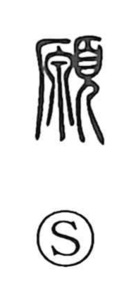

願

Kun: negau | On: gan
to wish ・ to request ・ petition
Explanation
願 is a phono-semantic character. The phonetic 原 supplies the on-yomi and carries an old nuance of circumspection, with early glosses explaining it in terms of a “large head” and “to think,” pointing to deep, deliberate thought. The semantic component 頁 is the head, drawn as a worshipper, a figure in reverent address to the gods. Combined, they express a respectful entreaty born of considered thought, which is why the character comes to mean to make a wish or petition with deference.